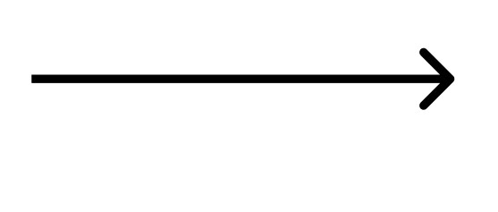

Werkplekleren
bestanden :
opdrachten :
-Reflecteren
-Kernwaarden
-Personal Branding
-Reflectieopdracht seminaries
-Opdracht Arbeidersmarkt
-Eindreflectie Opdracht
Pop Opdrachten :
Reflecteren :
School ervaringen :
Ervaring 1=
Spiraalmodel van Korthagen :
korte uitleg
De eerste week van school was al zeker heftig het was druk en vooral allemaal nieuw. Ook al wist ik wel waar ik moest zijn vond ik het toch soms, lastig voor alle lokalen terug te vinden
door de drukte. De cafetaria had ik ook vooral niet gemist en de aula’s die over vol zaten ook niet. Wel ben ik benieuwd welke nieuwe dingen dat ik ga bijleren en vooral de nieuwe vakken. De omgeving was de schoolcafetaria en de gangen, wat meestal ook super druk is je geraakt er soms gefrustreerd van en gestresseerd door de drukte. Wat ik meestal dan doe is bijvoorbeeld in de cafetaria is extra uitkijken en elkaar genoeg de ruimte geven. En in de klas is dat vooral rustig blijven en op te letten.
Ik geloof er ook in dat ik meer met de drukte zal kunnen omgaan wanneer dat ik het gewoon word. En ook dat ik nieuwe mensen ga ontmoeten en leren kennen.
Ik zie mezelf nog wel openbloeien maar dat zal met de weken duren tot dat ik me echt op mijn gemak zal voelen en of minder mezelf ga druk maken dat de cafetaria vol zit en of de klassen zelf.
Bij de drukte voel ik me vaak wel bij betrokken omdat de wachtrijen wel lang kunnen worden.
Net zoals de gangen druk kunnen zijn en ik ga nog naar school dus ik zal er nog even in moeten zitten.
Omgeving :
schoolcafetaria en de gangen,
Gedrag :
gefrustreerd, gestresseerd
Competities :
De drukte (andere leerlingen)
Overtuigingen :
Met de drukte om leren gaan.
dentiteit :
minder mezelf ga druk maken en respectvol blijven daar medestudenten toe.
Betrokkenheid :
Ik ga naar school dus betrokken zal ik er altijd bijzijn maar ik doe het als doel een diploma te krijgen. En vooral veel kennis + leerstof.
Ervaring 2 =
STARR methode.
korte uitleg
De lessen waren een hele ervaring omdat ik zelf een IT heb kon ik niet alle lessen het vorige semester doen dus nu neem ik alle vakken op en dat was toch even een hele aanpassing. Ook ik vind het al wel zeer interessant maar ook moeilijk ik leerde voor het eerst Web en Scripting kennen. Ik hoop aan het einde van de week dat ik er beter mee weg zal zijn omdat ik het wel toffe programma’s vind. De eerste paar lessen waren dus in het begin een en al stress omdat het echt in het begin onmogelijk lijkte maar achteraf als ik thuis kom en het beter bekijk valt het eigenlijk wel mee. Ik moet me minder opjagen en gewoon opletten in de klas en dan komt het wel goed.
Situatie :
De lessen.
Taak :
het leren kennen het proberen te begrijpen en hopelijk er beter in te worden.
Actie :
Thuis de leerstof te herbekijken en mij in de klas minder op te jagen.
Resultaat :
Achteraf heeft het wel gewerkt om thuis te komen en mij te realiseren dat het wel mogelijk is want in de klas zag ik dat nog even niet goedkomen.
Reflectie :
ik heb er van geleerd om me minder direct druk te maken in dingen waarvan ik niet de controle over heb. Ook het proberen los te laten en op te lossen wanneer dat het nodig is.
Kernwaarden :
Geluk & Tevredenheid:
Het besef dat ik nu een eerder als onbereikbaar beschouwd vak beheers, brengt diepe voldoening met zich mee. Mijn welverdiende vakantie na loonontvangst voelt als een beloning voor mijn inzet. Het voldane gevoel van teamwerk bij het voltooien van een lichtstoetwagen versterkt niet alleen de banden binnen ons team, maar benadrukt ook de kracht van gezamenlijke inspanningen. Deze momenten van vreugde, vakantie en gezamenlijke prestaties dragen bij aan een diepe innerlijke tevredenheid, waardoor mijn reis van zelfontplooiing en vervulling nog waardevoller wordt.
Trots:
- Succesvolle transfer en vlotte vliegreis, zelf geregeld.
- Overgestapt van bachelor naar graduaat, een betere optie.
- Trots op zelfstandigheid en doorzettingsvermogen tijdens alleen op kot zitten.
Mijn 3 kernkwadranten :
Reflectie:
Mijn levensfilosofie om goed te doen in opdrachten en prestaties, gevolgd door intrinsiek geluk, weerspiegelt de kern van mijn streven. Vriendschap als familie beschouwen betekent niet het negeren van familiebanden, maar eerder het erkennen van de diepe emotionele banden die in vriendschappen kunnen ontstaan. Plezier vinden in alles is niet alleen een optimistische kijk op het leven, maar ook een bron van veerkracht en optimisme.
Allergieën
Piekeren:
Mijn neiging tot overmatig piekeren transformeerde in een vermogen om het positieve te zien, zelfs bij kritiek op mijn werk. Praten met anderen en verschillende perspectieven overwegen zijn nu mijn strategieën om deze neiging te overwinnen.
Egoïstisch:
Ervaringen met egoïstisch gedrag hebben me geleerd vriendelijk maar duidelijk te zijn en voor mezelf op te komen.
Respectloos:
Een situatie met respectloos gedrag leerde me rustig te blijven en respect te behouden, zelfs op mindere dagen. Erkenning van de situatie en een positieve houding waren mijn sleutels om ermee om te gaan.
Personal Branding :
Mijn Personal Branding combineert levendige kleuren met strakke lijnen, een weerspiegeling van mijn persoonlijkheid die zowel chaotisch als ordelijk kan zijn. Ik waardeer rust op een pagina met een vleugje persoonlijkheid, kleurrijk maar niet als een kleurboek.Ik geloof dat kleding comfortabel en casual moet zijn, maar in dit geval kan het beide zijn.
Voeg een zwarte blazer toe en het wordt ook geschikt voor zakelijke gelegenheden, van vergaderingen tot de werkplaats. -Mijn stijl is een voortdurende zoektocht waarbij ik experimenterend verschillende kleuren en stijlen combineer. Creativiteit is iets wat ik wil behouden en verder ontwikkelen in mijn professionele leven.
Ik ben toekomstgericht en weet grotendeels wat ik wil, maar soms overvalt onzekerheid me. Praktisch ingesteld, neig ik ernaar eerst te handelen en dan pas volledig na te denken. De neiging om te lenen is iets dat ik voor mezelf wil behouden.
Hoewel ik geen ochtendmens ben, werk ik eraan om dit te verbeteren en een positieve houding te behouden in mijn professionele leven, waarbij ik mezelf aanmoedig om vroeger op te staan en eraan te wennen.
Werkveldverkenning Opdrachten:
Reflectieopdracht seminaries :
Begin :Begin Wat ik er van vond :
Mijn indruk van de sprekers was zeer positief. Dankzij hun inspirerende woorden heb ik nu een veel duidelijker beeld van wat de toekomst in deze richting inhoudt. Voordien was ik onzeker over mijn toekomst in grafische vormgeving, maar dankzij de gastsprekers voel ik me enthousiaster en beter geïnformeerd. Alle drie de sprekers waren buitengewoon boeiend en leerzaam. Persoonlijk sprong Yappa er voor mij uit, evenals de experts in het bedrijf van de Codeurs. Dit wil niet zeggen dat de laatste spreker minder interessant was, maar zijn onderwerp trok me gewoonweg minder aan. Het bedrijf MonoCode leek voor mij minder aantrekkelijk De gastsprekers van Yappa hebben me vooral geboeid vanwege de diepgang van hun presentatie. Dries heeft me doen inzien dat het belangrijk is om thuis aan je vaardigheden te blijven werken. Hoewel ik dit al wel besefte en al deed , was ik er nog niet volledig toegewijd aan. Hun benadering van werken sprak me aan, vooral het vermijden van overuren en de nadruk op persoonlijke groei binnen het bedrijf. Ik ben het volledig eens met de kernwaarden van hun bedrijf, zoals met passie werken en elke dag proberen te verbeteren, zoals Joeri uitlegde. De informele sfeer bij Yappa gaf me het gevoel dat collega's als vrienden samenwerken in plaats van strikt zakelijke relaties te onderhouden.
Midden:
Minder mijn interesse:
Helaas kon de laatste spreker Koen mijn interesse minder goed vasthouden, niet vanwege zijn presentatie maar omdat zijn onderwerp me minder aansprak. Ze houden zich niet meer bezig met grafisch ontwerpen, wat ik jammer vond. Hun focus ligt nu volledig op coderen en website-ontwikkeling, wat ook interessant is, maar ik twijfel of dit de toekomst is waarin ik mezelf volledig zie. Ze lijken op zoek te zijn naar studenten die gespecialiseerd zijn in codering, terwijl ik op dit moment nog geen expert ben, maar ik ben wel bereid om te leren.
Wat vooral mijn aandacht trok:
Wat me vooral aantrok was de presentatie van Brecht. Hij leek het meest te communiceren met het publiek en wist de studenten het beste te betrekken bij de presentatie. Zijn bedrijf de Codeurs past het beste bij mijn idee van een ideaal bedrijf. De hechte band tussen collega's en vrienden spreekt me aan, omdat ik geloof dat professionele relaties het beste werken wanneer er ook persoonlijke vriendschappen ontstaan en of gewoon zakelijk met elkaar om te gaan. Het feit dat ze begonnen zijn met slechts twee mensen en nu een bedrijf van vijf mensen hebben, maakte indruk op me.
Opdracht Arbeidersmarkt :
Werkplekverkenning – Analyse arbeidsmarkt
Vacature 1 :
Datum opzoeking:
16/10/2003
Naam vacature:
Technisch tekenaar / 3D Designer
Bedrijfsinformatie :
- Bedrijfsnaam: Servito
- Adres: Dendermondsesteenweg 256, 9070 Destelbergen
- Sector: Professionele keukenontwerp en installatie
Bedrijfsnaam:
Servito
Adres:
Dendermondsesteenweg 256, 9070 Destelbergen
Sector:
Professionele keukenontwerp en installatie
Cultuur :
VisieServito focust op detail en klanttevredenheid. Zaakvoerders staan persoonlijk garant voor ontwerp en verkoop,
met toegewijde technische ondersteuning.
Profiel:
- Minimaal bacheloropleiding, ervaring in keukenbouw is een pluspunt,
- integriteit en klantgerichtheid vereist.
- Skills: Kennis van Office-tools, vaardigheid in Autocad, Sketchup of vergelijkbare programma's.
Sterke Punten:
- Dynamisch en ambitieus team.
- Ruimte voor persoonlijke ontwikkeling.
- Aantrekkelijk salarispakket en voordelen .
Zwakke Punten
- Beperkte regio-dekking in Vlaanderen en Brussel.
- Locatie in Destelbergen kan onhandig zijn voor klanten buiten de regio.
- Afhankelijkheid van zaakvoerders kan schaalbaarheid beperken.
- Bachelor vereist, wat praktijkervaring kan uitsluiten.
Werkplekverkenning – Analyse arbeidsmark:
Vacature 4
Vacature nummer: 4
Datum opzoeking:
16/10/2003Naam
Naam vacature:
Web Developer
Bedrijfsinformatie :
- Bedrijfsnaam: PHPro
- Adres: Prins Boudewijnlaan 24e, 2550 Kontich
- Sector: Technologie en digitale oplossingen
Bedrijfsnaam:
PHPro
Adres:
Prins Boudewijnlaan 24e, 2550 Kontich.
Sector:
Technologie en digitale oplossingen.
Cultuur :
VisiePHPro waardeert werknemerstevredenheid en creëert een aangename werkomgeving met diverse activiteiten.
Ze leggen de nadruk op kwaliteitsgarantie, expertise, en het bevorderen van het welzijn van medewerkers.
Vacature Details
Profiel:
Ervaren Web Developer voor zowel front-end als back-end ontwikkeling, met expertise in HTML, CSS, Javascript, React,
Angular, Vue, PHP7, en MySQL.
Taalvaardigheid: Goede kennis van Nederlands en Engels.
Sterke Punten :
Werken met diverse en boeiende technologieën.
Creatieve mogelijkheden bij het bouwen van websites en oplossingen.
Voortdurende leerervaring door evoluerende technologieën.
Belangrijke bijdrage aan projecten voor grote klanten.
Kansen voor professionele groei door uitdagende taken.
Zwakke Punten :
Strakke deadlines, voortdurende veranderingen, onverwachte problemen, mogelijk lange uren. Beperkingen in creatieve vrijheid.

Eindreflectie Opdracht :
Eindreflectie Portfolio – Werkplekleren 1
Inleiding:
Tijdens mijn Werkplekleren (WPL) 1 heb ik niet alleen vakinhoudelijke kennis opgedaan, maar ook op organisatorisch, persoonlijk en technisch vlak veel geleerd. In deze reflectieve tekst zal ik mijn ervaringen delen en antwoord geven op specifieke vragen met betrekking tot mijn groei gedurende deze periode. Vanuit het oogpunt van planning, persoonlijke ontwikkeling en technische uitdagingen zal ik mijn inzichten presenteren. Dit leerproces heb ik niet alleen mijn grenzen verlegd op organisatorisch en persoonlijk vlak, maar heb ik ook met toewijding mijn best gedaan en actief gezocht naar technische kennis om mijn begrip te verdiepen. En ik vond het ook zeer fijn om mijn leerkrachten beter te leren kennen.
Midden:
Organisatorisch Vlak:
Op organisatorisch gebied ontdekte ik dat mijn planningsvaardigheden redelijk goed waren, maar ik wel had onderschat hoeveel tijd het daadwerkelijk zou kosten. Wekelijkse planningen werden dagelijks aangepast, waardoor ik nu een beter inzicht heb in het effectief samenstellen en bijwerken van planningen. En er werden wel degelijks persoonlijke deadlines gemaakt. Wel vond ik het wel fijn om dagelijks een planning voor mijn neus te zien liggen zodat ik wist wat er nog moest gebeuren en niet met het idee zat van niet weten wat te doen.
Persoonlijk Vlak:
Op persoonlijk vlak realiseerde ik me dat ik niet altijd alles alleen aankan. Mijn vastberadenheid was altijd mijn kracht, maar tijdens deze periode ontdekte ik de kracht van samenwerking en het belang van hulp vragen, vooral bij complexe technische vraagstukken. Het inzicht dat het delen van kennis en ervaringen met anderen niet alleen efficiënter werkt, maar ook verrijkend is, heeft mijn persoonlijke groei enorm beïnvloed. Het vermogen om mezelf niet te onderschatten en meer zelfvertrouwen op te bouwen, heeft niet alleen invloed gehad op mijn professionele ontwikkeling, maar heeft ook een positieve, weerspiegeling op mijn persoonlijke leven gehad. Ik heb geleerd dat het stellen van vragen niet alleen toont van nieuwsgierigheid, maar ook van moed. Het waarderen van teamwork en het genieten van zowel gezamenlijke inspanningen als zelfstandig werken hebben mijn vaardigheden op persoonlijk vlak. Deze ervaring heeft mijn openheid vergroot, waardoor ik meer bereid ben om uit mijn comfortzone te stappen en nieuwe uitdagingen aan te gaan. Het besef dat groei en leren een sociaal proces kunnen zijn, heeft mijn persoonlijke en professionele traject een waardevolle dimensie gegeven. Ik kijk met optimisme naar de toekomst, waarbij ik blijf streven naar een evenwichtige mix van vastberadenheid, samenwerking en zelfontwikkeling.
Technisch Vlak:
Technisch gezien stuitte ik op onverwachte moeilijkheden, zoals mijn neiging om snel gefrustreerd te raken. Met oefeningen en vastberadenheid merkte ik echter dat ik vooruitgang boekte. Wat was digitale vormgeving voor mij een onbekend terrein, maar door mijn vastberadenheid groeide ik uit tot een individu dat serieus toegewijd is aan deze richting en diepgaande kennis wil verzetten. De uitdagingen die ik tegenkwam, zoals het overwinnen van frustratie en angst van het niet goed genoeg te doen, hebben mijn doorzettingsvermogen versterkt. Ik heb geleerd om niet alleen technische obstakels te zien als struikelblokken, maar als kansen om te leren en te groeien. Mijn visuele en technische vaardigheden tonen nu beide aanzienlijke vooruitgang, en ik ben vastberaden om deze groei verder te bevorderen. Wat begon als een onzekere stap in de wereld van digitale vormgeving, is nu een opwindende reis van zelfontdekking en technische ontwikkeling geworden. Ik ben niet alleen bereid om mijn vaardigheden te verbeteren, maar ook om nieuwe uitdagingen aan te gaan en te blijven evolueren in dit vakgebied. Mijn vasthoudendheid en passie voor technologie zullen me blijven leiden naar nieuwe hoogten van succes en prestatie
Slot:
In WPL 1 heb ik niet alleen mijn vaardigheden aangescherpt, maar ook mijn motivatie versterkt. Met sterke visuele en technische skills, besef ik dat er ruimte is voor groei, vooral in codering en JavaScript. Mijn toewijding aan het begrijpen van deze technische aspecten en het tonen van meer initiatief en communicatie in mijn softskills zullen de focus zijn tijdens WPL 2. Hoewel er uitdagingen waren, kijk ik met enthousiasme naar de toekomst, vastberaden om mijn professionele reis verder te vervolgen en mijn competenties te blijven ontwikkelen. Het proces van leren en oefenen heeft me niet alleen geholpen om mijn technische vaardigheden te ontwikkelen, maar heeft ook mijn zelfbeheersing en het vermogen om onder druk te presteren verbeterd. Ik heb geleerd om niet alleen mijn sterke punten te omarmen, maar ook mijn zwakke punten te erkennen en hier gericht aan te werken. Deze technische ontwikkeling heeft mijn zelfvertrouwen versterkt en mijn vastberadenheid om te groeien in dit vakgebied aangewakkerd.